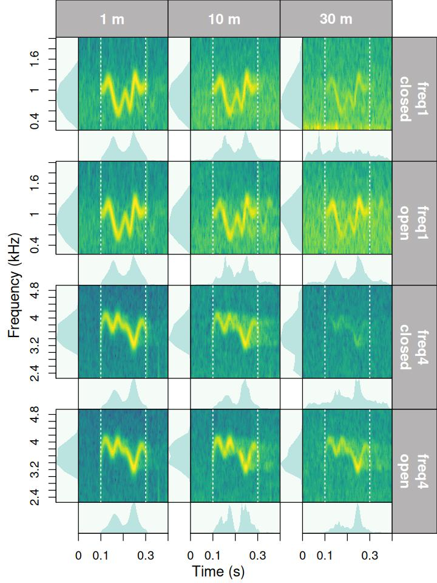
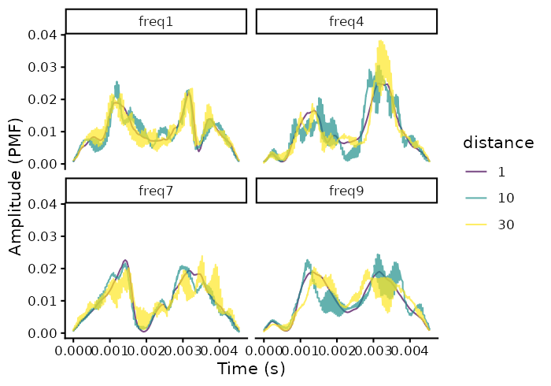
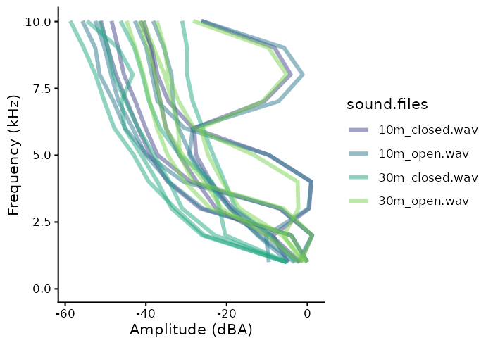
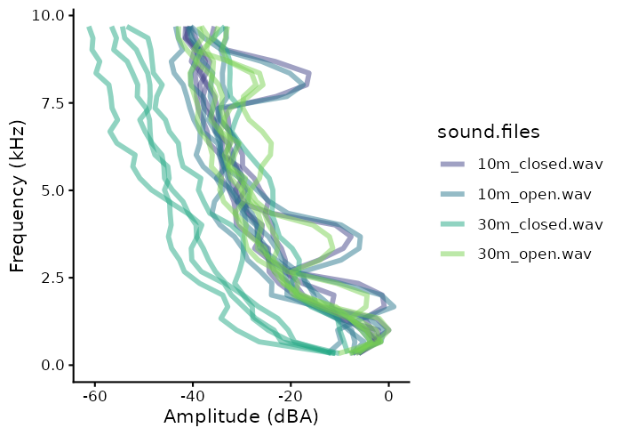

Quantify degradation
Marcelo Araya-Salas, PhD
2025-06-18
Source:vignettes/quantify_degradation.Rmd
quantify_degradation.Rmd

These are key considerations regarding the package behavior when assessing degradation:
- The package currently assumes that all recordings have been made with the same equipment and recording volume. This will be modified in future versions to allow for amplitude calibration of recordings.
- Wave envelope and frequency spectrum calculations are made after applying a bandpass filter within the frequency range of the reference sound (‘bottom.freq’ and ‘top.freq’ columns)
- The package offers two methods to compare sounds to the reference:
- Compare all sounds with the counterpart that was recorded at the closest distance to source (e.g. compare a sound recorded at 5m, 10m and 15m with its counterpart recorded at 1m). This is the default method.
- Compare all sounds with the counterpart recorded at the distance immediately before (e.g. a sound recorded at 10m compared with the one recorded at 5m, then sound recorded at 15m compared with the one recorded at 10m and so on).
- The package will attempt to use re-recorded sounds from the shortest distance in the same transect as reference. However, if there is another re-recorded sound from the same ‘sound.id’ at a shorter distance in other transects, it will be used as reference instead. This behavior aims to account for the fact that in this type of experiments reference sounds are typically recorded at 1 m and at single transect.
- The package assumes all sound files have the same sampling rate.
Required data structure
Propagation experiments tend to follow a common experimental design in which model sounds are re-recorded at increasing distance within a transect. Hence, the data must indicate, besides the basic acoustic annotation information (e.g. sound file, time, frequency), the transect and distance within that transect for each sound. baRulho comes with an example annotation data set that can be used to show the required data structure:
# load packages
library(baRulho)
library(viridis)
library(ggplot2)
# load example data
data("test_sounds_est")
test_sounds_est| sound.files | selec | start | end | bottom.freq | top.freq | sound.id | transect | distance |
|---|---|---|---|---|---|---|---|---|
| 10m_closed.wav | 1 | 0.050000 | 0.200000 | 1.333333 | 2.666667 | ambient | closed | 10 |
| 10m_closed.wav | 2 | 1.300000 | 1.500023 | 7.875000 | 8.805000 | freq:9 | closed | 10 |
| 10m_closed.wav | 3 | 1.550023 | 1.750045 | 3.208000 | 4.069000 | freq:4 | closed | 10 |
| 10m_closed.wav | 4 | 1.800045 | 2.000068 | 0.422000 | 1.223000 | freq:1 | closed | 10 |
| 10m_closed.wav | 5 | 2.050068 | 2.250091 | 6.905000 | 7.917000 | freq:7 | closed | 10 |
| 10m_open.wav | 1 | 0.050000 | 0.200000 | 1.333333 | 2.666667 | ambient | open | 10 |
| 10m_open.wav | 2 | 1.300000 | 1.500023 | 7.875000 | 8.805000 | freq:9 | open | 10 |
| 10m_open.wav | 3 | 1.550023 | 1.750045 | 3.208000 | 4.069000 | freq:4 | open | 10 |
| 10m_open.wav | 4 | 1.800045 | 2.000068 | 0.422000 | 1.223000 | freq:1 | open | 10 |
| 10m_open.wav | 5 | 2.050068 | 2.250091 | 6.905000 | 7.917000 | freq:7 | open | 10 |
| 1m_open.wav | 1 | 0.050000 | 0.200000 | 1.333333 | 2.666667 | ambient | open | 1 |
| 1m_open.wav | 2 | 1.300000 | 1.500023 | 7.875000 | 8.805000 | freq:9 | open | 1 |
| 1m_open.wav | 3 | 1.550023 | 1.750045 | 3.208000 | 4.069000 | freq:4 | open | 1 |
| 1m_open.wav | 4 | 1.800045 | 2.000068 | 0.422000 | 1.223000 | freq:1 | open | 1 |
| 1m_open.wav | 5 | 2.050068 | 2.250091 | 6.905000 | 7.917000 | freq:7 | open | 1 |
| 30m_closed.wav | 1 | 0.050000 | 0.200000 | 1.333333 | 2.666667 | ambient | closed | 30 |
| 30m_closed.wav | 2 | 1.300000 | 1.500023 | 7.875000 | 8.805000 | freq:9 | closed | 30 |
| 30m_closed.wav | 3 | 1.550023 | 1.750045 | 3.208000 | 4.069000 | freq:4 | closed | 30 |
| 30m_closed.wav | 4 | 1.800045 | 2.000068 | 0.422000 | 1.223000 | freq:1 | closed | 30 |
| 30m_closed.wav | 5 | 2.050068 | 2.250091 | 6.905000 | 7.917000 | freq:7 | closed | 30 |
| 30m_open.wav | 1 | 0.050000 | 0.200000 | 1.333333 | 2.666667 | ambient | open | 30 |
| 30m_open.wav | 2 | 1.300000 | 1.500023 | 7.875000 | 8.805000 | freq:9 | open | 30 |
| 30m_open.wav | 3 | 1.550023 | 1.750045 | 3.208000 | 4.069000 | freq:4 | open | 30 |
| 30m_open.wav | 4 | 1.800045 | 2.000068 | 0.422000 | 1.223000 | freq:1 | open | 30 |
| 30m_open.wav | 5 | 2.050068 | 2.250091 | 6.905000 | 7.917000 | freq:7 | open | 30 |
This the despcription of the required input data columns:
- sound.files: character or factor column with the name of the sound files including the file extension (e.g. “rec_1.wav”)
- selec: numeric, character or factor column with a unique identifier (at least within each sound file) for each annotation (e.g. 1, 2, 3 or “a”, “b”, “c”)
- start: numeric column with the start position in time of an annotated sound (in seconds)
- end: numeric column with the end position in time of an annotated sound (in seconds)
- ‘bottom.freq’: numeric column with the bottom frequency of the frequency range of the annotation (in kHz, used for bandpass filtering)
- top.freq: numeric column with the top frequency of the frequency range of the annotation (in kHz, used for bandpass filtering)
- channel: numeric column with the number of the channel in which the annotation is found in a multi-channel sound file (optional, by default is 1 if not supplied)
- sound.id: numeric, character or factor column with the ID of sounds used to identify same sounds at different distances and transects. Each sound ID can have only one sample at each distance/transect combination. The sound id label “ambient” can be used to defined annotations in which ambient noise can be measure.
- transect: numeric, character or factor column with the transect ID.
- distance: numeric column with with the distance (in m) from the source at which the sound was recorded. The package assumes that each distance is replicated once within a transect.
Setting reference sounds
The combined information from these columns is used to identify the
reference sounds for each test sound. The function
set_reference_sounds() does exactly that. Hence, unless you
define the reference sound for each test sound manually,
set_reference_sounds() must always be run before any
degradation measuring function.
There are two possible experimental designs when defining reference
sounds (which is controlled by the argument ‘method’ in
set_reference_sounds()):
- 1: compare sounds (by ‘sound.id’) with their counterpart that was recorded at the closest distance to source (e.g. compare a sound recorded at 5m, 10m and 15m with its counterpart recorded at 1m). This is the default method. For this design users can have a single example for the shortest distance to be used as reference (for instance at 1m as is the case in most studies) The function will try to use references from the same transect. However, if there is another test sound from the same ‘sound.id’ at a shorter distance in other transects, it will be used as reference instead. This behavior aims to account for the fact that in this type of experiments reference sounds are typically recorded at 1 m and at single transect.
- 2: compare all sounds with their counterpart recorded at the distance immediately before within a transect (e.g. a sound recorded at 10m compared with the same sound recorded at 5m, then sound recorded at 15m compared with same sound recorded at 10m and so on).
Also note that some selections are labeled as “ambient” in the ‘sound.id’. These selections refer to ambient (background) noise. Ambient noise can be used by some functions to correct for amplitude differences due to non-target sounds.
In this example data there are 4 recordings at increasing distances: 1m, 5m, 10m and 15m:
# count selection per recordings
unique(test_sounds_est$sound.files)[1] "10m_closed.wav" "10m_open.wav" "1m_open.wav" "30m_closed.wav"
[5] "30m_open.wav" The data contains selections for 5 sounds as well as 1 ambient noise selections at each distance/recording:
table(test_sounds_est$sound.id, test_sounds_est$distance)| 1 | 10 | 30 | |
|---|---|---|---|
| ambient | 1 | 2 | 2 |
| freq:1 | 1 | 2 | 2 |
| freq:4 | 1 | 2 | 2 |
| freq:7 | 1 | 2 | 2 |
| freq:9 | 1 | 2 | 2 |
baRulho can take sound file annotations represented in the following R objects:
- Data frames
- Selection tables
- Extended selection tables
The last 2 are annotation specific R classes included in warbleR. Take a look at this annotation format vignette from warbleR for more details on these formats.
Measuring degradation
Data format
As mention above, the function set_reference_sounds() is
used to determined, for each row in the input data, which sounds would
be used as references. The function can do this using any of the two
methods described above:
# add reference column
test_sounds_est <- set_reference_sounds(test_sounds_est, method = 1)
# print
test_sounds_est
[30mcomputing references (step 0 of 0):
[39m| sound.files | selec | start | end | bottom.freq | top.freq | sound.id | transect | distance | reference |
|---|---|---|---|---|---|---|---|---|---|
| 10m_closed.wav | 1 | 0.050000 | 0.200000 | 1.333333 | 2.666667 | ambient | closed | 10 | NA |
| 10m_closed.wav | 2 | 1.300000 | 1.500023 | 7.875000 | 8.805000 | freq:9 | closed | 10 | 1m_open.wav-2 |
| 10m_closed.wav | 3 | 1.550023 | 1.750045 | 3.208000 | 4.069000 | freq:4 | closed | 10 | 1m_open.wav-3 |
| 10m_closed.wav | 4 | 1.800045 | 2.000068 | 0.422000 | 1.223000 | freq:1 | closed | 10 | 1m_open.wav-4 |
| 10m_closed.wav | 5 | 2.050068 | 2.250091 | 6.905000 | 7.917000 | freq:7 | closed | 10 | 1m_open.wav-5 |
| 10m_open.wav | 1 | 0.050000 | 0.200000 | 1.333333 | 2.666667 | ambient | open | 10 | NA |
| 10m_open.wav | 2 | 1.300000 | 1.500023 | 7.875000 | 8.805000 | freq:9 | open | 10 | 1m_open.wav-2 |
| 10m_open.wav | 3 | 1.550023 | 1.750045 | 3.208000 | 4.069000 | freq:4 | open | 10 | 1m_open.wav-3 |
| 10m_open.wav | 4 | 1.800045 | 2.000068 | 0.422000 | 1.223000 | freq:1 | open | 10 | 1m_open.wav-4 |
| 10m_open.wav | 5 | 2.050068 | 2.250091 | 6.905000 | 7.917000 | freq:7 | open | 10 | 1m_open.wav-5 |
| 1m_open.wav | 1 | 0.050000 | 0.200000 | 1.333333 | 2.666667 | ambient | open | 1 | NA |
| 1m_open.wav | 2 | 1.300000 | 1.500023 | 7.875000 | 8.805000 | freq:9 | open | 1 | NA |
| 1m_open.wav | 3 | 1.550023 | 1.750045 | 3.208000 | 4.069000 | freq:4 | open | 1 | NA |
| 1m_open.wav | 4 | 1.800045 | 2.000068 | 0.422000 | 1.223000 | freq:1 | open | 1 | NA |
| 1m_open.wav | 5 | 2.050068 | 2.250091 | 6.905000 | 7.917000 | freq:7 | open | 1 | NA |
| 30m_closed.wav | 1 | 0.050000 | 0.200000 | 1.333333 | 2.666667 | ambient | closed | 30 | NA |
| 30m_closed.wav | 2 | 1.300000 | 1.500023 | 7.875000 | 8.805000 | freq:9 | closed | 30 | 1m_open.wav-2 |
| 30m_closed.wav | 3 | 1.550023 | 1.750045 | 3.208000 | 4.069000 | freq:4 | closed | 30 | 1m_open.wav-3 |
| 30m_closed.wav | 4 | 1.800045 | 2.000068 | 0.422000 | 1.223000 | freq:1 | closed | 30 | 1m_open.wav-4 |
| 30m_closed.wav | 5 | 2.050068 | 2.250091 | 6.905000 | 7.917000 | freq:7 | closed | 30 | 1m_open.wav-5 |
| 30m_open.wav | 1 | 0.050000 | 0.200000 | 1.333333 | 2.666667 | ambient | open | 30 | NA |
| 30m_open.wav | 2 | 1.300000 | 1.500023 | 7.875000 | 8.805000 | freq:9 | open | 30 | 1m_open.wav-2 |
| 30m_open.wav | 3 | 1.550023 | 1.750045 | 3.208000 | 4.069000 | freq:4 | open | 30 | 1m_open.wav-3 |
| 30m_open.wav | 4 | 1.800045 | 2.000068 | 0.422000 | 1.223000 | freq:1 | open | 30 | 1m_open.wav-4 |
| 30m_open.wav | 5 | 2.050068 | 2.250091 | 6.905000 | 7.917000 | freq:7 | open | 30 | 1m_open.wav-5 |
The function adds the column ‘reference’ which is then used by downstream functions plotting or measuring degradation. Hence it is used before running any of the degradation functions (including plotting functions). References are indicated as a the combination of the ‘sound.files’ and ‘selec’ column. For instance, ‘10m.wav-1’ indicates that the row in which the ‘selec’ column is ‘1’ and the sound file is ‘10m.wav’ should be used as reference. The function also checks that the information ‘X’ (the input annotation data) is in the right format so it won’t produce errors in downstream analysis (see ‘X’ argument description for details on format). The function will ignore rows in which the sound id column is ‘ambient’, ‘start_marker’ or ‘end_marker’.
Visual inspection
The function plot_degradation() aims to simplify the
visual inspection of sound degradation by producing multipanel figures
(saved as JPEG files in ‘dest.path’) containing visualizations of each
test sound and its reference. Sounds are sorted by distance (columns)
and transect. Visualizations include spectrograms, amplitude envelopes
and power spectra (the last 2 are optional):
# sort to order panels
test_sounds_est <-
test_sounds_est[order(test_sounds_est$sound.id,
test_sounds_est$transect,
decreasing = FALSE),]
# create plots
degrad_imgs <- plot_degradation(test_sounds_est, dest.path = tempdir())
[30mThe image files have been saved in the directory path '/private/var/folders/y6/nj790rtn62lfktb1sh__79hc0000gn/T/RtmpCLmZXz'
[39mThese are the paths to some of the image files:
degrad_imgs[1] "/var/folders/y6/nj790rtn62lfktb1sh__79hc0000gn/T//RtmpCLmZXz/plot_degradation_p1.jpeg"
[2] "/var/folders/y6/nj790rtn62lfktb1sh__79hc0000gn/T//RtmpCLmZXz/plot_degradation_p2.jpeg"… and this is one of the images: 
Each row includes all the copies of a sound id for a given transect (the row label includes the sound id in the first line and transect in the second line), also including its reference if it comes from another transect. Ambient noise annotations (sound.id ‘ambient’) are excluded.
Blur ratio
Blur ratio quantifies the degradation of sound as a function of the
distortion of the amplitude envelope (time domain) while excluding
changes due to energy attenuation. This measure was first described by
Dabelsteen et al. (1993). Blur ratio is measured as the mismatch between
amplitude envelopes (expressed as probability density functions) of the
reference sound and the re-recorded sound. Low values indicate low
degradation of sounds. The function blur_ratio() measures
the blur ratio of sounds in which a reference playback has been
re-recorded at different distances. The function compares each sound to
the corresponding reference sound within the supplied frequency range
(e.g. bandpass) of the reference sound (‘bottom.freq’ and ‘top.freq’
columns in ‘X’). The ‘sound.id’ column must be used to tell the function
to only compare sounds belonging to the same category (e.g. song-types).
All sound files (or wave objects in the extended selection table) must
have the same sampling rate so the length of envelopes is comparable.
Blur ratio can be calculated as follows:
# run blur ratio
br <- blur_ratio(X = test_sounds_est)
# see output
br| sound.files | selec | start | end | bottom.freq | top.freq | sound.id | transect | distance | reference | blur.ratio |
|---|---|---|---|---|---|---|---|---|---|---|
| 10m_closed.wav | 1 | 0.050000 | 0.200000 | 1.333333 | 2.666667 | ambient | closed | 10 | NA | NA |
| 30m_closed.wav | 1 | 0.050000 | 0.200000 | 1.333333 | 2.666667 | ambient | closed | 30 | NA | NA |
| 10m_open.wav | 1 | 0.050000 | 0.200000 | 1.333333 | 2.666667 | ambient | open | 10 | NA | NA |
| 1m_open.wav | 1 | 0.050000 | 0.200000 | 1.333333 | 2.666667 | ambient | open | 1 | NA | NA |
| 30m_open.wav | 1 | 0.050000 | 0.200000 | 1.333333 | 2.666667 | ambient | open | 30 | NA | NA |
| 10m_closed.wav | 4 | 1.800045 | 2.000068 | 0.422000 | 1.223000 | freq:1 | closed | 10 | 1m_open.wav-4 | 0.0566597 |
| 30m_closed.wav | 4 | 1.800045 | 2.000068 | 0.422000 | 1.223000 | freq:1 | closed | 30 | 1m_open.wav-4 | 0.0849068 |
| 10m_open.wav | 4 | 1.800045 | 2.000068 | 0.422000 | 1.223000 | freq:1 | open | 10 | 1m_open.wav-4 | 0.1207314 |
| 1m_open.wav | 4 | 1.800045 | 2.000068 | 0.422000 | 1.223000 | freq:1 | open | 1 | NA | NA |
| 30m_open.wav | 4 | 1.800045 | 2.000068 | 0.422000 | 1.223000 | freq:1 | open | 30 | 1m_open.wav-4 | 0.1254130 |
| 10m_closed.wav | 3 | 1.550023 | 1.750045 | 3.208000 | 4.069000 | freq:4 | closed | 10 | 1m_open.wav-3 | 0.0958649 |
| 30m_closed.wav | 3 | 1.550023 | 1.750045 | 3.208000 | 4.069000 | freq:4 | closed | 30 | 1m_open.wav-3 | 0.0847076 |
| 10m_open.wav | 3 | 1.550023 | 1.750045 | 3.208000 | 4.069000 | freq:4 | open | 10 | 1m_open.wav-3 | 0.1930450 |
| 1m_open.wav | 3 | 1.550023 | 1.750045 | 3.208000 | 4.069000 | freq:4 | open | 1 | NA | NA |
| 30m_open.wav | 3 | 1.550023 | 1.750045 | 3.208000 | 4.069000 | freq:4 | open | 30 | 1m_open.wav-3 | 0.1345533 |
| 10m_closed.wav | 5 | 2.050068 | 2.250091 | 6.905000 | 7.917000 | freq:7 | closed | 10 | 1m_open.wav-5 | 0.0709498 |
| 30m_closed.wav | 5 | 2.050068 | 2.250091 | 6.905000 | 7.917000 | freq:7 | closed | 30 | 1m_open.wav-5 | 0.1923770 |
| 10m_open.wav | 5 | 2.050068 | 2.250091 | 6.905000 | 7.917000 | freq:7 | open | 10 | 1m_open.wav-5 | 0.0767771 |
| 1m_open.wav | 5 | 2.050068 | 2.250091 | 6.905000 | 7.917000 | freq:7 | open | 1 | NA | NA |
| 30m_open.wav | 5 | 2.050068 | 2.250091 | 6.905000 | 7.917000 | freq:7 | open | 30 | 1m_open.wav-5 | 0.0709116 |
| 10m_closed.wav | 2 | 1.300000 | 1.500023 | 7.875000 | 8.805000 | freq:9 | closed | 10 | 1m_open.wav-2 | 0.1075226 |
| 30m_closed.wav | 2 | 1.300000 | 1.500023 | 7.875000 | 8.805000 | freq:9 | closed | 30 | 1m_open.wav-2 | 0.1504670 |
| 10m_open.wav | 2 | 1.300000 | 1.500023 | 7.875000 | 8.805000 | freq:9 | open | 10 | 1m_open.wav-2 | 0.1344266 |
| 1m_open.wav | 2 | 1.300000 | 1.500023 | 7.875000 | 8.805000 | freq:9 | open | 1 | NA | NA |
| 30m_open.wav | 2 | 1.300000 | 1.500023 | 7.875000 | 8.805000 | freq:9 | open | 30 | 1m_open.wav-2 | 0.0919376 |
The output data frame is simply the input data with an additional
column (‘blur.ratio’) with the blur ratio values. Note that
NAs are returned for sounds used as reference and ‘ambient’
noise selections.
The function plot_blur_ratio() can be used to generate
image files (in ‘jpeg’ format) for each comparison showing spectrograms
of both sounds and the overlaid amplitude envelopes (as probability mass
functions (PMF)).
# plot blur ratio
blur_imgs <- plot_blur_ratio(X = test_sounds_est, dest.path = tempdir())
[30mThe image files have been saved in the directory path '/private/var/folders/y6/nj790rtn62lfktb1sh__79hc0000gn/T/RtmpCLmZXz'
[39mThese are the paths to some of the image files:
head(blur_imgs)[1] "/var/folders/y6/nj790rtn62lfktb1sh__79hc0000gn/T//RtmpCLmZXz/blur_ratio_freq:1-1m_open.wav-4-10m_closed.wav-4.jpeg"
[2] "/var/folders/y6/nj790rtn62lfktb1sh__79hc0000gn/T//RtmpCLmZXz/blur_ratio_freq:1-1m_open.wav-4-30m_closed.wav-4.jpeg"
[3] "/var/folders/y6/nj790rtn62lfktb1sh__79hc0000gn/T//RtmpCLmZXz/blur_ratio_freq:1-1m_open.wav-4-10m_open.wav-4.jpeg"
[4] "/var/folders/y6/nj790rtn62lfktb1sh__79hc0000gn/T//RtmpCLmZXz/blur_ratio_freq:1-1m_open.wav-4-30m_open.wav-4.jpeg"
[5] "/var/folders/y6/nj790rtn62lfktb1sh__79hc0000gn/T//RtmpCLmZXz/blur_ratio_freq:4-1m_open.wav-3-10m_closed.wav-3.jpeg"
[6] "/var/folders/y6/nj790rtn62lfktb1sh__79hc0000gn/T//RtmpCLmZXz/blur_ratio_freq:4-1m_open.wav-3-30m_closed.wav-3.jpeg"Output image files (in the working directory) look like this one:

The image shows the spectrogram for the reference and re-recorded sound, as well as the envelopes of both sounds overlaid in a single graph. Colors indicate to which sound spectrograms and envelopes belong to. The blur ratio value is also displayed.
The function can also return the amplitude spectrum contours when the
argument envelopes = TRUE. The contours can be directly
input into ggplot to visualize amplitude envelopes, and how they vary
with distance and across sound types (and ambient noise if
included):
# get envelopes
br <- blur_ratio(X = test_sounds_est, envelopes = TRUE)
envs <- attributes(br)$envelopes
# make distance a factor for plotting
envs$distance <- as.factor(envs$distance)
# plot
ggplot(envs, aes(x = time, y = amp, col = distance)) +
geom_line() + facet_wrap( ~ sound.id) +
scale_color_viridis_d(alpha = 0.7) +
labs(x = "Time (s)", y = "Amplitude (PMF)") +
theme_classic()
The env.smooth argument could change envelope shapes and
related measurements, as higher values tend to smooth the envelopes. The
following code sets env.smooth = 800 which produces
smoother envelopes:
# get envelopes
br <- blur_ratio(X = test_sounds_est, envelopes = TRUE, env.smooth = 800)
envs <- attributes(br)$envelopes
envs$distance <- as.factor(envs$distance)
ggplot(envs, aes(x = time, y = amp, col = distance)) +
geom_line() +
facet_wrap( ~ sound.id) +
scale_color_viridis_d(alpha = 0.7) +
labs(x = "Time (s)", y = "Amplitude (PMF)") +
theme_classic()
Spectrum blur ratio
Spectrum blur ratio (measured by spectrum_blur_ratio())
quantifies the degradation of sound as a function of the change in sound
energy across the frequency domain, analogous to the blur ratio
described above for the time domain (and implemented in
blur_ratio()). Low values also indicate low degradation of
sounds. Spectrum blur ratio is measured as the mismatch between power
spectra (expressed as probability density functions) of the reference
sound and the re-recorded sound. It works in the same way than
blur_ratio(), comparing each sound to the corresponding
reference sound, and the output and images are alike as well.
Spectrum blur ratio can be calculated as follows:
# run Spectrum blur ratio
sbr <- spectrum_blur_ratio(test_sounds_est)
# see output
sbr| sound.files | selec | start | end | bottom.freq | top.freq | sound.id | transect | distance | reference | spectrum.blur.ratio |
|---|---|---|---|---|---|---|---|---|---|---|
| 10m_closed.wav | 1 | 0.050000 | 0.200000 | 1.333333 | 2.666667 | ambient | closed | 10 | NA | NA |
| 30m_closed.wav | 1 | 0.050000 | 0.200000 | 1.333333 | 2.666667 | ambient | closed | 30 | NA | NA |
| 10m_open.wav | 1 | 0.050000 | 0.200000 | 1.333333 | 2.666667 | ambient | open | 10 | NA | NA |
| 1m_open.wav | 1 | 0.050000 | 0.200000 | 1.333333 | 2.666667 | ambient | open | 1 | NA | NA |
| 30m_open.wav | 1 | 0.050000 | 0.200000 | 1.333333 | 2.666667 | ambient | open | 30 | NA | NA |
| 10m_closed.wav | 4 | 1.800045 | 2.000068 | 0.422000 | 1.223000 | freq:1 | closed | 10 | 1m_open.wav-4 | 0.0290863 |
| 30m_closed.wav | 4 | 1.800045 | 2.000068 | 0.422000 | 1.223000 | freq:1 | closed | 30 | 1m_open.wav-4 | 0.0524915 |
| 10m_open.wav | 4 | 1.800045 | 2.000068 | 0.422000 | 1.223000 | freq:1 | open | 10 | 1m_open.wav-4 | 0.0406274 |
| 1m_open.wav | 4 | 1.800045 | 2.000068 | 0.422000 | 1.223000 | freq:1 | open | 1 | NA | NA |
| 30m_open.wav | 4 | 1.800045 | 2.000068 | 0.422000 | 1.223000 | freq:1 | open | 30 | 1m_open.wav-4 | 0.0771104 |
| 10m_closed.wav | 3 | 1.550023 | 1.750045 | 3.208000 | 4.069000 | freq:4 | closed | 10 | 1m_open.wav-3 | 0.0373389 |
| 30m_closed.wav | 3 | 1.550023 | 1.750045 | 3.208000 | 4.069000 | freq:4 | closed | 30 | 1m_open.wav-3 | 0.0375922 |
| 10m_open.wav | 3 | 1.550023 | 1.750045 | 3.208000 | 4.069000 | freq:4 | open | 10 | 1m_open.wav-3 | 0.0511878 |
| 1m_open.wav | 3 | 1.550023 | 1.750045 | 3.208000 | 4.069000 | freq:4 | open | 1 | NA | NA |
| 30m_open.wav | 3 | 1.550023 | 1.750045 | 3.208000 | 4.069000 | freq:4 | open | 30 | 1m_open.wav-3 | 0.0513809 |
| 10m_closed.wav | 5 | 2.050068 | 2.250091 | 6.905000 | 7.917000 | freq:7 | closed | 10 | 1m_open.wav-5 | 0.0315084 |
| 30m_closed.wav | 5 | 2.050068 | 2.250091 | 6.905000 | 7.917000 | freq:7 | closed | 30 | 1m_open.wav-5 | 0.0958100 |
| 10m_open.wav | 5 | 2.050068 | 2.250091 | 6.905000 | 7.917000 | freq:7 | open | 10 | 1m_open.wav-5 | 0.0117749 |
| 1m_open.wav | 5 | 2.050068 | 2.250091 | 6.905000 | 7.917000 | freq:7 | open | 1 | NA | NA |
| 30m_open.wav | 5 | 2.050068 | 2.250091 | 6.905000 | 7.917000 | freq:7 | open | 30 | 1m_open.wav-5 | 0.0373253 |
| 10m_closed.wav | 2 | 1.300000 | 1.500023 | 7.875000 | 8.805000 | freq:9 | closed | 10 | 1m_open.wav-2 | 0.0266188 |
| 30m_closed.wav | 2 | 1.300000 | 1.500023 | 7.875000 | 8.805000 | freq:9 | closed | 30 | 1m_open.wav-2 | 0.0421037 |
| 10m_open.wav | 2 | 1.300000 | 1.500023 | 7.875000 | 8.805000 | freq:9 | open | 10 | 1m_open.wav-2 | 0.0716653 |
| 1m_open.wav | 2 | 1.300000 | 1.500023 | 7.875000 | 8.805000 | freq:9 | open | 1 | NA | NA |
| 30m_open.wav | 2 | 1.300000 | 1.500023 | 7.875000 | 8.805000 | freq:9 | open | 30 | 1m_open.wav-2 | 0.0302866 |
As in blur_ratio(), spectrum_blur_ratio()
can also return the amplitude spectrum contours with the argument
spectra = TRUE:
sbr <- spectrum_blur_ratio(X = test_sounds_est, spectra = TRUE)
spctr <- attributes(sbr)$spectra
spctr$distance <- as.factor(spctr$distance)
ggplot(spctr[spctr$freq > 0.3,], aes(y = amp, x = freq, col = distance)) +
geom_line() +
facet_wrap( ~ sound.id) +
scale_color_viridis_d(alpha = 0.7) +
labs(x = "Frequency (kHz)", y = "Amplitude (PMF)") +
coord_flip() +
theme_classic()
Excess attenuation
With every doubling of distance, sounds attenuate with a 6 dB loss of
amplitude (Morton, 1975; Marten & Marler, 1977). Any additional loss
of amplitude results in excess attenuation, or energy loss in excess of
that expected to occur with distance via spherical spreading, due to
atmospheric conditions or habitat (Wiley & Richards, 1978). This
degradation metric can be measured using the
excess_attenuation() function. Low values indicate little
sound attenuation. The function will then compare each sound to the
corresponding reference sound within the frequency range (e.g. bandpass)
of the reference sound (‘bottom.freq’ and ‘top.freq’ columns in
‘X’).
excess_attenuation() can be measured like this:
# run envelope correlation
ea <- excess_attenuation(test_sounds_est)The output, similar to those of other functions, is an extended selection table with the input data, but also including two new columns (‘reference’ and ‘excess.attenuation’) with the reference sound and the excess attenuation:
# print output
ea| sound.files | selec | start | end | bottom.freq | top.freq | sound.id | transect | distance | reference | excess.attenuation |
|---|---|---|---|---|---|---|---|---|---|---|
| 10m_closed.wav | 1 | 0.050000 | 0.200000 | 1.333333 | 2.666667 | ambient | closed | 10 | NA | NA |
| 30m_closed.wav | 1 | 0.050000 | 0.200000 | 1.333333 | 2.666667 | ambient | closed | 30 | NA | NA |
| 10m_open.wav | 1 | 0.050000 | 0.200000 | 1.333333 | 2.666667 | ambient | open | 10 | NA | NA |
| 1m_open.wav | 1 | 0.050000 | 0.200000 | 1.333333 | 2.666667 | ambient | open | 1 | NA | NA |
| 30m_open.wav | 1 | 0.050000 | 0.200000 | 1.333333 | 2.666667 | ambient | open | 30 | NA | NA |
| 10m_closed.wav | 4 | 1.800045 | 2.000068 | 0.422000 | 1.223000 | freq:1 | closed | 10 | 1m_open.wav-4 | -12.5107538 |
| 30m_closed.wav | 4 | 1.800045 | 2.000068 | 0.422000 | 1.223000 | freq:1 | closed | 30 | 1m_open.wav-4 | -17.5992177 |
| 10m_open.wav | 4 | 1.800045 | 2.000068 | 0.422000 | 1.223000 | freq:1 | open | 10 | 1m_open.wav-4 | -13.1624863 |
| 1m_open.wav | 4 | 1.800045 | 2.000068 | 0.422000 | 1.223000 | freq:1 | open | 1 | NA | NA |
| 30m_open.wav | 4 | 1.800045 | 2.000068 | 0.422000 | 1.223000 | freq:1 | open | 30 | 1m_open.wav-4 | -14.3428912 |
| 10m_closed.wav | 3 | 1.550023 | 1.750045 | 3.208000 | 4.069000 | freq:4 | closed | 10 | 1m_open.wav-3 | -9.6475480 |
| 30m_closed.wav | 3 | 1.550023 | 1.750045 | 3.208000 | 4.069000 | freq:4 | closed | 30 | 1m_open.wav-3 | -1.6012932 |
| 10m_open.wav | 3 | 1.550023 | 1.750045 | 3.208000 | 4.069000 | freq:4 | open | 10 | 1m_open.wav-3 | -12.3666608 |
| 1m_open.wav | 3 | 1.550023 | 1.750045 | 3.208000 | 4.069000 | freq:4 | open | 1 | NA | NA |
| 30m_open.wav | 3 | 1.550023 | 1.750045 | 3.208000 | 4.069000 | freq:4 | open | 30 | 1m_open.wav-3 | -12.7808558 |
| 10m_closed.wav | 5 | 2.050068 | 2.250091 | 6.905000 | 7.917000 | freq:7 | closed | 10 | 1m_open.wav-5 | -9.7543558 |
| 30m_closed.wav | 5 | 2.050068 | 2.250091 | 6.905000 | 7.917000 | freq:7 | closed | 30 | 1m_open.wav-5 | 0.9463683 |
| 10m_open.wav | 5 | 2.050068 | 2.250091 | 6.905000 | 7.917000 | freq:7 | open | 10 | 1m_open.wav-5 | -9.9278602 |
| 1m_open.wav | 5 | 2.050068 | 2.250091 | 6.905000 | 7.917000 | freq:7 | open | 1 | NA | NA |
| 30m_open.wav | 5 | 2.050068 | 2.250091 | 6.905000 | 7.917000 | freq:7 | open | 30 | 1m_open.wav-5 | -8.2325649 |
| 10m_closed.wav | 2 | 1.300000 | 1.500023 | 7.875000 | 8.805000 | freq:9 | closed | 10 | 1m_open.wav-2 | -1.8595989 |
| 30m_closed.wav | 2 | 1.300000 | 1.500023 | 7.875000 | 8.805000 | freq:9 | closed | 30 | 1m_open.wav-2 | 6.1574396 |
| 10m_open.wav | 2 | 1.300000 | 1.500023 | 7.875000 | 8.805000 | freq:9 | open | 10 | 1m_open.wav-2 | -5.8921147 |
| 1m_open.wav | 2 | 1.300000 | 1.500023 | 7.875000 | 8.805000 | freq:9 | open | 1 | NA | NA |
| 30m_open.wav | 2 | 1.300000 | 1.500023 | 7.875000 | 8.805000 | freq:9 | open | 30 | 1m_open.wav-2 | -8.8725801 |
Envelope correlation
Amplitude envelope correlation measures the similarity of two sounds
in the time domain. The envelope_correlation() function
measures the envelope correlation coefficients between reference
playback and re-recorded sounds. Values close to 1 means very similar
amplitude envelopes (i.e. little degradation has occurred). If envelopes
have different lengths (that is when sounds have different lengths)
cross-correlation is applied and the maximum correlation coefficient is
returned. Cross-correlation is achieved by sliding the shortest sound
along the largest one and calculating the correlation at each step. As
in the functions detailed above, ‘sound.id’ column must be used to
instruct the function to only compare sounds that belong to the same
category.
envelope_correlation() can be run as follows:
# run envelope correlation
ec <- envelope_correlation(test_sounds_est)The output is also similar to those of other functions; an extended selection table similar to input data, but also includes two new columns (‘reference’ and ‘envelope.correlation’) with the reference sound and the amplitude envelope correlation coefficients:
# print output
ec| sound.files | selec | start | end | bottom.freq | top.freq | sound.id | transect | distance | reference | excess.attenuation |
|---|---|---|---|---|---|---|---|---|---|---|
| 10m_closed.wav | 1 | 0.050000 | 0.200000 | 1.333333 | 2.666667 | ambient | closed | 10 | NA | NA |
| 30m_closed.wav | 1 | 0.050000 | 0.200000 | 1.333333 | 2.666667 | ambient | closed | 30 | NA | NA |
| 10m_open.wav | 1 | 0.050000 | 0.200000 | 1.333333 | 2.666667 | ambient | open | 10 | NA | NA |
| 1m_open.wav | 1 | 0.050000 | 0.200000 | 1.333333 | 2.666667 | ambient | open | 1 | NA | NA |
| 30m_open.wav | 1 | 0.050000 | 0.200000 | 1.333333 | 2.666667 | ambient | open | 30 | NA | NA |
| 10m_closed.wav | 4 | 1.800045 | 2.000068 | 0.422000 | 1.223000 | freq:1 | closed | 10 | 1m_open.wav-4 | -12.5107538 |
| 30m_closed.wav | 4 | 1.800045 | 2.000068 | 0.422000 | 1.223000 | freq:1 | closed | 30 | 1m_open.wav-4 | -17.5992177 |
| 10m_open.wav | 4 | 1.800045 | 2.000068 | 0.422000 | 1.223000 | freq:1 | open | 10 | 1m_open.wav-4 | -13.1624863 |
| 1m_open.wav | 4 | 1.800045 | 2.000068 | 0.422000 | 1.223000 | freq:1 | open | 1 | NA | NA |
| 30m_open.wav | 4 | 1.800045 | 2.000068 | 0.422000 | 1.223000 | freq:1 | open | 30 | 1m_open.wav-4 | -14.3428912 |
| 10m_closed.wav | 3 | 1.550023 | 1.750045 | 3.208000 | 4.069000 | freq:4 | closed | 10 | 1m_open.wav-3 | -9.6475480 |
| 30m_closed.wav | 3 | 1.550023 | 1.750045 | 3.208000 | 4.069000 | freq:4 | closed | 30 | 1m_open.wav-3 | -1.6012932 |
| 10m_open.wav | 3 | 1.550023 | 1.750045 | 3.208000 | 4.069000 | freq:4 | open | 10 | 1m_open.wav-3 | -12.3666608 |
| 1m_open.wav | 3 | 1.550023 | 1.750045 | 3.208000 | 4.069000 | freq:4 | open | 1 | NA | NA |
| 30m_open.wav | 3 | 1.550023 | 1.750045 | 3.208000 | 4.069000 | freq:4 | open | 30 | 1m_open.wav-3 | -12.7808558 |
| 10m_closed.wav | 5 | 2.050068 | 2.250091 | 6.905000 | 7.917000 | freq:7 | closed | 10 | 1m_open.wav-5 | -9.7543558 |
| 30m_closed.wav | 5 | 2.050068 | 2.250091 | 6.905000 | 7.917000 | freq:7 | closed | 30 | 1m_open.wav-5 | 0.9463683 |
| 10m_open.wav | 5 | 2.050068 | 2.250091 | 6.905000 | 7.917000 | freq:7 | open | 10 | 1m_open.wav-5 | -9.9278602 |
| 1m_open.wav | 5 | 2.050068 | 2.250091 | 6.905000 | 7.917000 | freq:7 | open | 1 | NA | NA |
| 30m_open.wav | 5 | 2.050068 | 2.250091 | 6.905000 | 7.917000 | freq:7 | open | 30 | 1m_open.wav-5 | -8.2325649 |
| 10m_closed.wav | 2 | 1.300000 | 1.500023 | 7.875000 | 8.805000 | freq:9 | closed | 10 | 1m_open.wav-2 | -1.8595989 |
| 30m_closed.wav | 2 | 1.300000 | 1.500023 | 7.875000 | 8.805000 | freq:9 | closed | 30 | 1m_open.wav-2 | 6.1574396 |
| 10m_open.wav | 2 | 1.300000 | 1.500023 | 7.875000 | 8.805000 | freq:9 | open | 10 | 1m_open.wav-2 | -5.8921147 |
| 1m_open.wav | 2 | 1.300000 | 1.500023 | 7.875000 | 8.805000 | freq:9 | open | 1 | NA | NA |
| 30m_open.wav | 2 | 1.300000 | 1.500023 | 7.875000 | 8.805000 | freq:9 | open | 30 | 1m_open.wav-2 | -8.8725801 |
Note that this function doesn’t provide a graphical output. However,
the graphs generated by blur_ratio() can be used to inspect
the envelope shapes and the alignment of sounds.
Spectrum correlation
Spectrum correlation measures the similarity of two sounds in the
frequency domain. This is similar to
envelope_correlation(), but in the frequency domain. Both
sounds are compared within the frequency range of the reference sound
(so both spectra have the same length). Again, values near 1 indicate
identical frequency spectrum (i.e. no degradation).
# run spectrum correlation
sc <- spectrum_correlation(test_sounds_est)The output is also similar to that of
envelope_correlation():
# print output
sc| sound.files | selec | start | end | bottom.freq | top.freq | sound.id | transect | distance | reference | spectrum.correlation |
|---|---|---|---|---|---|---|---|---|---|---|
| 10m_closed.wav | 1 | 0.050000 | 0.200000 | 1.333333 | 2.666667 | ambient | closed | 10 | NA | NA |
| 30m_closed.wav | 1 | 0.050000 | 0.200000 | 1.333333 | 2.666667 | ambient | closed | 30 | NA | NA |
| 10m_open.wav | 1 | 0.050000 | 0.200000 | 1.333333 | 2.666667 | ambient | open | 10 | NA | NA |
| 1m_open.wav | 1 | 0.050000 | 0.200000 | 1.333333 | 2.666667 | ambient | open | 1 | NA | NA |
| 30m_open.wav | 1 | 0.050000 | 0.200000 | 1.333333 | 2.666667 | ambient | open | 30 | NA | NA |
| 10m_closed.wav | 4 | 1.800045 | 2.000068 | 0.422000 | 1.223000 | freq:1 | closed | 10 | 1m_open.wav-4 | 0.9983597 |
| 30m_closed.wav | 4 | 1.800045 | 2.000068 | 0.422000 | 1.223000 | freq:1 | closed | 30 | 1m_open.wav-4 | -0.0609972 |
| 10m_open.wav | 4 | 1.800045 | 2.000068 | 0.422000 | 1.223000 | freq:1 | open | 10 | 1m_open.wav-4 | 0.9466352 |
| 1m_open.wav | 4 | 1.800045 | 2.000068 | 0.422000 | 1.223000 | freq:1 | open | 1 | NA | NA |
| 30m_open.wav | 4 | 1.800045 | 2.000068 | 0.422000 | 1.223000 | freq:1 | open | 30 | 1m_open.wav-4 | 0.9776356 |
| 10m_closed.wav | 3 | 1.550023 | 1.750045 | 3.208000 | 4.069000 | freq:4 | closed | 10 | 1m_open.wav-3 | 0.9558702 |
| 30m_closed.wav | 3 | 1.550023 | 1.750045 | 3.208000 | 4.069000 | freq:4 | closed | 30 | 1m_open.wav-3 | 0.7311193 |
| 10m_open.wav | 3 | 1.550023 | 1.750045 | 3.208000 | 4.069000 | freq:4 | open | 10 | 1m_open.wav-3 | 0.8872755 |
| 1m_open.wav | 3 | 1.550023 | 1.750045 | 3.208000 | 4.069000 | freq:4 | open | 1 | NA | NA |
| 30m_open.wav | 3 | 1.550023 | 1.750045 | 3.208000 | 4.069000 | freq:4 | open | 30 | 1m_open.wav-3 | 0.7881992 |
| 10m_closed.wav | 5 | 2.050068 | 2.250091 | 6.905000 | 7.917000 | freq:7 | closed | 10 | 1m_open.wav-5 | 0.9997165 |
| 30m_closed.wav | 5 | 2.050068 | 2.250091 | 6.905000 | 7.917000 | freq:7 | closed | 30 | 1m_open.wav-5 | 0.9749093 |
| 10m_open.wav | 5 | 2.050068 | 2.250091 | 6.905000 | 7.917000 | freq:7 | open | 10 | 1m_open.wav-5 | 0.9906310 |
| 1m_open.wav | 5 | 2.050068 | 2.250091 | 6.905000 | 7.917000 | freq:7 | open | 1 | NA | NA |
| 30m_open.wav | 5 | 2.050068 | 2.250091 | 6.905000 | 7.917000 | freq:7 | open | 30 | 1m_open.wav-5 | 0.9866226 |
| 10m_closed.wav | 2 | 1.300000 | 1.500023 | 7.875000 | 8.805000 | freq:9 | closed | 10 | 1m_open.wav-2 | 0.9818309 |
| 30m_closed.wav | 2 | 1.300000 | 1.500023 | 7.875000 | 8.805000 | freq:9 | closed | 30 | 1m_open.wav-2 | 0.9947720 |
| 10m_open.wav | 2 | 1.300000 | 1.500023 | 7.875000 | 8.805000 | freq:9 | open | 10 | 1m_open.wav-2 | 0.9980480 |
| 1m_open.wav | 2 | 1.300000 | 1.500023 | 7.875000 | 8.805000 | freq:9 | open | 1 | NA | NA |
| 30m_open.wav | 2 | 1.300000 | 1.500023 | 7.875000 | 8.805000 | freq:9 | open | 30 | 1m_open.wav-2 | 0.9965715 |
As in envelope_correlation(),
spectrum_correlation() doesn’t provide a graphical output.
However, the graphs generated by spectrum_blur_ratio() can
also be used to inspect the spectrum shapes and the sound alignment.
Signal-to-noise ratio
Signal-to-noise ratio (SNR) quantifies sound amplitude level in
relation to ambient noise as a metric of overall sound attenuation.
Therefore, attenuation refers to the loss of energy as described by
Dabelsteen et al (1993). This method is implemented in the function
signal_to_noise_ratio(), which uses envelopes to quantify
the sound power for signals and background noise. The function requires
a measurement of ambient noise, which could either be the noise right
before each sound (noise.ref = "adjacent") or one or more
ambient noise measurements per recording
(noise.ref = "custom"). For the latter, selections on sound
parameters in which ambient noise will be measured must be specified.
Alternatively, one or more selections of ambient noise can be used as
reference (see ‘noise.ref’ argument). This can potentially provide a
more accurate representation of ambient noise. When margins overlap with
another acoustic signal nearby, SNR will be inaccurate, so margin length
should be carefully considered. Any SNR less than or equal to one
suggests background noise is equal to or overpowering the acoustic
signal. SNR can be measured as follows:
# run signal to noise ratio
snr <-
signal_to_noise_ratio(test_sounds_est,
pb = FALSE,
noise.ref = "custom",
mar = 0.1)The output is also similar to the other functions:
# print output
snr| sound.files | selec | start | end | bottom.freq | top.freq | sound.id | transect | distance | reference | signal.to.noise.ratio |
|---|---|---|---|---|---|---|---|---|---|---|
| 10m_closed.wav | 1 | 0.050000 | 0.200000 | 1.333333 | 2.666667 | ambient | closed | 10 | NA | NA |
| 30m_closed.wav | 1 | 0.050000 | 0.200000 | 1.333333 | 2.666667 | ambient | closed | 30 | NA | NA |
| 10m_open.wav | 1 | 0.050000 | 0.200000 | 1.333333 | 2.666667 | ambient | open | 10 | NA | NA |
| 1m_open.wav | 1 | 0.050000 | 0.200000 | 1.333333 | 2.666667 | ambient | open | 1 | NA | NA |
| 30m_open.wav | 1 | 0.050000 | 0.200000 | 1.333333 | 2.666667 | ambient | open | 30 | NA | NA |
| 10m_closed.wav | 4 | 1.800045 | 2.000068 | 0.422000 | 1.223000 | freq:1 | closed | 10 | 1m_open.wav-4 | 15.0140795 |
| 30m_closed.wav | 4 | 1.800045 | 2.000068 | 0.422000 | 1.223000 | freq:1 | closed | 30 | 1m_open.wav-4 | -7.3194710 |
| 10m_open.wav | 4 | 1.800045 | 2.000068 | 0.422000 | 1.223000 | freq:1 | open | 10 | 1m_open.wav-4 | 18.6300887 |
| 1m_open.wav | 4 | 1.800045 | 2.000068 | 0.422000 | 1.223000 | freq:1 | open | 1 | NA | 25.2040533 |
| 30m_open.wav | 4 | 1.800045 | 2.000068 | 0.422000 | 1.223000 | freq:1 | open | 30 | 1m_open.wav-4 | 6.2497775 |
| 10m_closed.wav | 3 | 1.550023 | 1.750045 | 3.208000 | 4.069000 | freq:4 | closed | 10 | 1m_open.wav-3 | 10.3757926 |
| 30m_closed.wav | 3 | 1.550023 | 1.750045 | 3.208000 | 4.069000 | freq:4 | closed | 30 | 1m_open.wav-3 | -23.6573391 |
| 10m_open.wav | 3 | 1.550023 | 1.750045 | 3.208000 | 4.069000 | freq:4 | open | 10 | 1m_open.wav-3 | 16.8352930 |
| 1m_open.wav | 3 | 1.550023 | 1.750045 | 3.208000 | 4.069000 | freq:4 | open | 1 | NA | 23.8308618 |
| 30m_open.wav | 3 | 1.550023 | 1.750045 | 3.208000 | 4.069000 | freq:4 | open | 30 | 1m_open.wav-3 | 2.6671788 |
| 10m_closed.wav | 5 | 2.050068 | 2.250091 | 6.905000 | 7.917000 | freq:7 | closed | 10 | 1m_open.wav-5 | -0.2872684 |
| 30m_closed.wav | 5 | 2.050068 | 2.250091 | 6.905000 | 7.917000 | freq:7 | closed | 30 | 1m_open.wav-5 | -37.8714516 |
| 10m_open.wav | 5 | 2.050068 | 2.250091 | 6.905000 | 7.917000 | freq:7 | open | 10 | 1m_open.wav-5 | 3.3664871 |
| 1m_open.wav | 5 | 2.050068 | 2.250091 | 6.905000 | 7.917000 | freq:7 | open | 1 | NA | 12.9396862 |
| 30m_open.wav | 5 | 2.050068 | 2.250091 | 6.905000 | 7.917000 | freq:7 | open | 30 | 1m_open.wav-5 | -12.4579158 |
| 10m_closed.wav | 2 | 1.300000 | 1.500023 | 7.875000 | 8.805000 | freq:9 | closed | 10 | 1m_open.wav-2 | -4.0232758 |
| 30m_closed.wav | 2 | 1.300000 | 1.500023 | 7.875000 | 8.805000 | freq:9 | closed | 30 | 1m_open.wav-2 | -38.6680143 |
| 10m_open.wav | 2 | 1.300000 | 1.500023 | 7.875000 | 8.805000 | freq:9 | open | 10 | 1m_open.wav-2 | 3.5736359 |
| 1m_open.wav | 2 | 1.300000 | 1.500023 | 7.875000 | 8.805000 | freq:9 | open | 1 | NA | 17.2034424 |
| 30m_open.wav | 2 | 1.300000 | 1.500023 | 7.875000 | 8.805000 | freq:9 | open | 30 | 1m_open.wav-2 | -7.5582795 |
Negative values can occur when the background noise measured has higher power than the signal. Note that this function does not compare sounds to references, so no reference column is added.
Tail-to-signal ratio
Tail-to-signal ratio (TSR) is used to quantify reverberations.
Specifically TSR measures the ratio of energy in the reverberation tail
(the time segment right after the sound) to energy in the sound. A
general margin in which reverberation tail will be measured must be
specified. The function will measure TSR within the supplied frequency
range (e.g. bandpass) of the reference sound (‘bottom.freq’ and
‘top.freq’ columns in ‘X’). Two methods for calculating reverberations
are provided (see ‘type’ argument). Type 1 is based on the
original description of TSR in Dabelsteen et al. (1993) while
type 2 is better referred to as “tail-to-noise ratio”,
given that it compares the amplitude of tails to those of ambient noise.
For both types higher values represent more reverberations. TSR can be
measured as follows:
# run tail to signal ratio
tsr <- tail_to_signal_ratio(test_sounds_est, tsr.formula = 1, mar = 0.05)Again, the output is similar to other functions:
# print output
tsr| sound.files | selec | start | end | bottom.freq | top.freq | sound.id | transect | distance | reference | tail.to.signal.ratio |
|---|---|---|---|---|---|---|---|---|---|---|
| 10m_closed.wav | 1 | 0.050000 | 0.200000 | 1.333333 | 2.666667 | ambient | closed | 10 | NA | NA |
| 30m_closed.wav | 1 | 0.050000 | 0.200000 | 1.333333 | 2.666667 | ambient | closed | 30 | NA | NA |
| 10m_open.wav | 1 | 0.050000 | 0.200000 | 1.333333 | 2.666667 | ambient | open | 10 | NA | NA |
| 1m_open.wav | 1 | 0.050000 | 0.200000 | 1.333333 | 2.666667 | ambient | open | 1 | NA | NA |
| 30m_open.wav | 1 | 0.050000 | 0.200000 | 1.333333 | 2.666667 | ambient | open | 30 | NA | NA |
| 10m_closed.wav | 4 | 1.800045 | 2.000068 | 0.422000 | 1.223000 | freq:1 | closed | 10 | 1m_open.wav-4 | -17.601030 |
| 30m_closed.wav | 4 | 1.800045 | 2.000068 | 0.422000 | 1.223000 | freq:1 | closed | 30 | 1m_open.wav-4 | -6.897373 |
| 10m_open.wav | 4 | 1.800045 | 2.000068 | 0.422000 | 1.223000 | freq:1 | open | 10 | 1m_open.wav-4 | -13.619545 |
| 1m_open.wav | 4 | 1.800045 | 2.000068 | 0.422000 | 1.223000 | freq:1 | open | 1 | NA | -25.749053 |
| 30m_open.wav | 4 | 1.800045 | 2.000068 | 0.422000 | 1.223000 | freq:1 | open | 30 | 1m_open.wav-4 | -9.288438 |
| 10m_closed.wav | 3 | 1.550023 | 1.750045 | 3.208000 | 4.069000 | freq:4 | closed | 10 | 1m_open.wav-3 | -23.773865 |
| 30m_closed.wav | 3 | 1.550023 | 1.750045 | 3.208000 | 4.069000 | freq:4 | closed | 30 | 1m_open.wav-3 | -7.546368 |
| 10m_open.wav | 3 | 1.550023 | 1.750045 | 3.208000 | 4.069000 | freq:4 | open | 10 | 1m_open.wav-3 | -24.588476 |
| 1m_open.wav | 3 | 1.550023 | 1.750045 | 3.208000 | 4.069000 | freq:4 | open | 1 | NA | -31.022133 |
| 30m_open.wav | 3 | 1.550023 | 1.750045 | 3.208000 | 4.069000 | freq:4 | open | 30 | 1m_open.wav-3 | -19.867073 |
| 10m_closed.wav | 5 | 2.050068 | 2.250091 | 6.905000 | 7.917000 | freq:7 | closed | 10 | 1m_open.wav-5 | -26.099051 |
| 30m_closed.wav | 5 | 2.050068 | 2.250091 | 6.905000 | 7.917000 | freq:7 | closed | 30 | 1m_open.wav-5 | -2.503217 |
| 10m_open.wav | 5 | 2.050068 | 2.250091 | 6.905000 | 7.917000 | freq:7 | open | 10 | 1m_open.wav-5 | -25.610614 |
| 1m_open.wav | 5 | 2.050068 | 2.250091 | 6.905000 | 7.917000 | freq:7 | open | 1 | NA | -26.171361 |
| 30m_open.wav | 5 | 2.050068 | 2.250091 | 6.905000 | 7.917000 | freq:7 | open | 30 | 1m_open.wav-5 | -16.857756 |
| 10m_closed.wav | 2 | 1.300000 | 1.500023 | 7.875000 | 8.805000 | freq:9 | closed | 10 | 1m_open.wav-2 | -21.246920 |
| 30m_closed.wav | 2 | 1.300000 | 1.500023 | 7.875000 | 8.805000 | freq:9 | closed | 30 | 1m_open.wav-2 | -4.364514 |
| 10m_open.wav | 2 | 1.300000 | 1.500023 | 7.875000 | 8.805000 | freq:9 | open | 10 | 1m_open.wav-2 | -27.069954 |
| 1m_open.wav | 2 | 1.300000 | 1.500023 | 7.875000 | 8.805000 | freq:9 | open | 1 | NA | -37.578924 |
| 30m_open.wav | 2 | 1.300000 | 1.500023 | 7.875000 | 8.805000 | freq:9 | open | 30 | 1m_open.wav-2 | -23.934725 |
Tail-to-signal ratio values are typically negative as signals tend to have higher power than that in the reverberating tail.
Spectrogram correlation
Finally, the function spcc() measures spectrogram
cross-correlation as a metric of sound distortion of sounds. Values
close to 1 means very similar spectrograms (i.e. little sound
distortion). The function is a wrapper on warbleR’s
cross_correlation(). It can be run as follows:
# run spcc
sc <- spcc(X = test_sounds_est, wl = 512)And again, the output is similar to other functions:
# print output
sc| sound.files | selec | start | end | bottom.freq | top.freq | sound.id | transect | distance | reference | cross.correlation |
|---|---|---|---|---|---|---|---|---|---|---|
| 10m_closed.wav | 1 | 0.050000 | 0.200000 | 1.333333 | 2.666667 | ambient | closed | 10 | NA | NA |
| 30m_closed.wav | 1 | 0.050000 | 0.200000 | 1.333333 | 2.666667 | ambient | closed | 30 | NA | NA |
| 10m_open.wav | 1 | 0.050000 | 0.200000 | 1.333333 | 2.666667 | ambient | open | 10 | NA | NA |
| 1m_open.wav | 1 | 0.050000 | 0.200000 | 1.333333 | 2.666667 | ambient | open | 1 | NA | NA |
| 30m_open.wav | 1 | 0.050000 | 0.200000 | 1.333333 | 2.666667 | ambient | open | 30 | NA | NA |
| 10m_closed.wav | 4 | 1.800045 | 2.000068 | 0.422000 | 1.223000 | freq:1 | closed | 10 | 1m_open.wav-4 | 0.8836689 |
| 30m_closed.wav | 4 | 1.800045 | 2.000068 | 0.422000 | 1.223000 | freq:1 | closed | 30 | 1m_open.wav-4 | 0.6830069 |
| 10m_open.wav | 4 | 1.800045 | 2.000068 | 0.422000 | 1.223000 | freq:1 | open | 10 | 1m_open.wav-4 | 0.8572338 |
| 1m_open.wav | 4 | 1.800045 | 2.000068 | 0.422000 | 1.223000 | freq:1 | open | 1 | NA | NA |
| 30m_open.wav | 4 | 1.800045 | 2.000068 | 0.422000 | 1.223000 | freq:1 | open | 30 | 1m_open.wav-4 | 0.7818865 |
| 10m_closed.wav | 3 | 1.550023 | 1.750045 | 3.208000 | 4.069000 | freq:4 | closed | 10 | 1m_open.wav-3 | 0.9031194 |
| 30m_closed.wav | 3 | 1.550023 | 1.750045 | 3.208000 | 4.069000 | freq:4 | closed | 30 | 1m_open.wav-3 | 0.6789203 |
| 10m_open.wav | 3 | 1.550023 | 1.750045 | 3.208000 | 4.069000 | freq:4 | open | 10 | 1m_open.wav-3 | 0.9176390 |
| 1m_open.wav | 3 | 1.550023 | 1.750045 | 3.208000 | 4.069000 | freq:4 | open | 1 | NA | NA |
| 30m_open.wav | 3 | 1.550023 | 1.750045 | 3.208000 | 4.069000 | freq:4 | open | 30 | 1m_open.wav-3 | 0.8641667 |
| 10m_closed.wav | 5 | 2.050068 | 2.250091 | 6.905000 | 7.917000 | freq:7 | closed | 10 | 1m_open.wav-5 | 0.9275559 |
| 30m_closed.wav | 5 | 2.050068 | 2.250091 | 6.905000 | 7.917000 | freq:7 | closed | 30 | 1m_open.wav-5 | 0.6423207 |
| 10m_open.wav | 5 | 2.050068 | 2.250091 | 6.905000 | 7.917000 | freq:7 | open | 10 | 1m_open.wav-5 | 0.9370945 |
| 1m_open.wav | 5 | 2.050068 | 2.250091 | 6.905000 | 7.917000 | freq:7 | open | 1 | NA | NA |
| 30m_open.wav | 5 | 2.050068 | 2.250091 | 6.905000 | 7.917000 | freq:7 | open | 30 | 1m_open.wav-5 | 0.8985404 |
| 10m_closed.wav | 2 | 1.300000 | 1.500023 | 7.875000 | 8.805000 | freq:9 | closed | 10 | 1m_open.wav-2 | 0.9050119 |
| 30m_closed.wav | 2 | 1.300000 | 1.500023 | 7.875000 | 8.805000 | freq:9 | closed | 30 | 1m_open.wav-2 | 0.7437507 |
| 10m_open.wav | 2 | 1.300000 | 1.500023 | 7.875000 | 8.805000 | freq:9 | open | 10 | 1m_open.wav-2 | 0.9229654 |
| 1m_open.wav | 2 | 1.300000 | 1.500023 | 7.875000 | 8.805000 | freq:9 | open | 1 | NA | NA |
| 30m_open.wav | 2 | 1.300000 | 1.500023 | 7.875000 | 8.805000 | freq:9 | open | 30 | 1m_open.wav-2 | 0.9106767 |
Other measurements
Noise profiles
The function noise_profile() allows to estimate the
frequency spectrum of ambient noise. This can be done on extended
selection tables (using the segments containing no sound) or over entire
sound files in the working directory (or path supplied). The function
uses the seewave function meanspec() internally to
calculate frequency spectra. The following code measures the ambient
noise profile for the recordings at distance >= 5m on the example
extended selection table:
# run noise profile
np <-
noise_profile(X = test_sounds_est[test_sounds_est$distance > 5,], mar = 0.05)
[30mcomputing noise profile(s) (step 0 of 0):
[39mThe output is a data frame with amplitude values for the frequency bins for each wave object in the extended selection table:
# print output
head(np, 20)| sound.files | freq | amp |
|---|---|---|
| 10m_closed.wav | 1.002273 | -1.196456 |
| 10m_closed.wav | 2.004545 | -6.852595 |
| 10m_closed.wav | 3.006818 | -15.990795 |
| 10m_closed.wav | 4.009091 | -22.279091 |
| 10m_closed.wav | 5.011364 | -26.815598 |
| 10m_closed.wav | 6.013636 | -30.629347 |
| 10m_closed.wav | 7.015909 | -31.714171 |
| 10m_closed.wav | 8.018182 | -32.280959 |
| 10m_closed.wav | 9.020454 | -34.252180 |
| 10m_closed.wav | 10.022727 | -38.539584 |
| 10m_open.wav | 1.002273 | -1.805731 |
| 10m_open.wav | 2.004545 | -7.122749 |
| 10m_open.wav | 3.006818 | -14.555992 |
| 10m_open.wav | 4.009091 | -21.549840 |
| 10m_open.wav | 5.011364 | -27.037548 |
| 10m_open.wav | 6.013636 | -31.469219 |
| 10m_open.wav | 7.015909 | -32.099066 |
| 10m_open.wav | 8.018182 | -32.407401 |
| 10m_open.wav | 9.020454 | -34.641385 |
| 10m_open.wav | 10.022727 | -39.110357 |
This can be graphically represented as follows:
ggplot(np, aes(y = amp, x = freq, col = sound.files)) +
geom_line(linewidth = 1.4) +
scale_color_viridis_d(begin = 0.2, end = 0.8, alpha = 0.5) +
labs(x = "Frequency (kHz)", y = "Amplitude (dBA)") +
coord_flip() +
theme_classic()The output data is actually an average of several frequency spectra
for each sound file. We can obtain the original spectra by setting the
argument averaged = FALSE:
np <-
noise_profile(X = test_sounds_est[test_sounds_est$distance > 5, ],
mar = 0.1, averaged = FALSE)
# make a column containing sound file and selection
np$sf.sl <- paste(np$sound.files, np$selec)
ggplot(np, aes(
y = amp,
x = freq,
col = sound.files,
group = sf.sl
)) +
geom_line(linewidth = 1.4) +
scale_color_viridis_d(begin = 0.2, end = 0.8, alpha = 0.5) +
labs(x = "Frequency (kHz)", y = "Amplitude (dBA)") +
coord_flip() +
theme_classic()
Note that we can limit the frequency range by using a bandpass filter (‘bp’ argument). In addition, the argument ‘hop.size’, which control the size of the time windows, affects the precision in the frequency domain. We can get a better precision by increasing ‘hop.size’ (or ‘wl’):
np <- noise_profile(
X = test_sounds_est[test_sounds_est$distance > 5,],
mar = 0.05,
bp = c(0, 10),
averaged = FALSE,
hop.size = 3
)
# make a column containing sound file and selection
np$sf.sl <- paste(np$sound.files, np$selec)
ggplot(np, aes(
y = amp,
x = freq,
col = sound.files,
group = sf.sl
)) +
geom_line(linewidth = 1.4) +
scale_color_viridis_d(begin = 0.2, end = 0.8, alpha = 0.5) +
labs(x = "Frequency (kHz)", y = "Amplitude (dBA)") +
coord_flip() +
theme_classic()Warning:
[1m
[22mRemoved 20 rows containing missing values or values outside the scale range
(`geom_line()`).
The function can estimate noise profiles for entire sound files, by supplying a list of the files (argument ‘files’, and not supplying ‘X’) or by simply running it without supplying ‘X’ or ‘files’. In this case it will run over all sound files in the working directory (or ‘path’ supplied).
Please report any bugs here.
The package baRulho should be cited as follows:
Araya-Salas, M. (2020), baRulho: quantifying degradation of (animal) acoustic signals in R. R package version 1.0.0.
References
Araya-Salas, M. (2017). Rraven: connecting R and Raven bioacoustic software. R package version 1.0.0.
Araya-Salas, M. (2020), baRulho: quantifying degradation of (animal) acoustic signals in R. R package version 1.0.0
Araya-Salas M, Smith-Vidaurre G. (2017) warbleR: An R package to streamline analysis of animal acoustic signals. Methods Ecol Evol 8:184–191.
Dabelsteen, T., Larsen, O. N., & Pedersen, S. B. (1993). Habitat-induced degradation of sound signals: Quantifying the effects of communication sounds and bird location on blur ratio, excess attenuation, and signal-to-noise ratio in blackbird song. The Journal of the Acoustical Society of America, 93(4), 2206.
Marten, K., & Marler, P. (1977). Sound transmission and its significance for animal vocalization. Behavioral Ecology and Sociobiology, 2(3), 271-290.
Morton, E. S. (1975). Ecological sources of selection on avian sounds. The American Naturalist, 109(965), 17-34.
Tobias, J. A., Aben, J., Brumfield, R. T., Derryberry, E. P., Halfwerk, W., Slabbekoorn, H., & Seddon, N. (2010). Song divergence by sensory drive in Amazonian birds. Evolution, 64(10), 2820-2839.
Session information
R version 4.5.1 (2025-06-13)
Platform: aarch64-apple-darwin20
Running under: macOS Sonoma 14.7.6
Matrix products: default
BLAS: /Library/Frameworks/R.framework/Versions/4.5-arm64/Resources/lib/libRblas.0.dylib
LAPACK: /Library/Frameworks/R.framework/Versions/4.5-arm64/Resources/lib/libRlapack.dylib; LAPACK version 3.12.1
locale:
[1] en_US.UTF-8/en_US.UTF-8/en_US.UTF-8/C/en_US.UTF-8/en_US.UTF-8
time zone: UTC
tzcode source: internal
attached base packages:
[1] stats graphics grDevices utils datasets methods base
other attached packages:
[1] ggplot2_3.5.2 viridis_0.6.5 viridisLite_0.4.2 baRulho_2.1.5
[5] ohun_1.0.2 warbleR_1.1.34 NatureSounds_1.0.5 seewave_2.2.3
[9] tuneR_1.4.7 knitr_1.50
loaded via a namespace (and not attached):
[1] gtable_0.3.6 rjson_0.2.23 xfun_0.52 bslib_0.9.0
[5] vctrs_0.6.5 tools_4.5.1 bitops_1.0-9 curl_6.3.0
[9] parallel_4.5.1 tibble_3.3.0 proxy_0.4-27 pkgconfig_2.0.3
[13] KernSmooth_2.23-26 checkmate_2.3.2 RColorBrewer_1.1-3 desc_1.4.3
[17] lifecycle_1.0.4 stringr_1.5.1 compiler_4.5.1 farver_2.1.2
[21] textshaping_1.0.1 brio_1.1.5 htmltools_0.5.8.1 class_7.3-23
[25] sass_0.4.10 RCurl_1.98-1.17 yaml_2.3.10 pkgdown_2.1.3
[29] pillar_1.10.2 jquerylib_0.1.4 MASS_7.3-65 classInt_0.4-11
[33] cachem_1.1.0 Deriv_4.1.6 digest_0.6.37 stringi_1.8.7
[37] sf_1.0-21 labeling_0.4.3 fastmap_1.2.0 grid_4.5.1
[41] cli_3.6.5 magrittr_2.0.3 e1071_1.7-16 withr_3.0.2
[45] scales_1.4.0 backports_1.5.0 rmarkdown_2.29 httr_1.4.7
[49] Sim.DiffProc_4.9 signal_1.8-1 igraph_2.1.4 gridExtra_2.3
[53] ragg_1.4.0 png_0.1-8 kableExtra_1.4.0 pbapply_1.7-2
[57] evaluate_1.0.3 dtw_1.23-1 fftw_1.0-9 testthat_3.2.3
[61] rlang_1.1.6 Rcpp_1.0.14 glue_1.8.0 DBI_1.2.3
[65] xml2_1.3.8 svglite_2.2.1 rstudioapi_0.17.1 jsonlite_2.0.0
[69] R6_2.6.1 systemfonts_1.2.3 fs_1.6.6 units_0.8-7